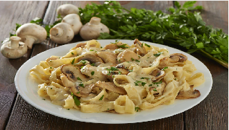

Powrót do strony głównej

opis: pyszny makaron z sosem pieczarkowym i mięsem do szybkiego przygotowania
skladniki
- filety z piersi kurczaka 500g
- Fix Świderki z kurczakiem w sosie serowym Knorr 1 opakowanie
- makaron tagliatelle 250g
- pieczarki 500g
- mleko 150ml
- cebula 1sztuka
- musztarda 2 lyzki
- olej rzepakowy 2 lyzki
przygotowanie
- Posiekaj cebulę w kostkę. Pokrój kurczaka w paski, a grzyby w plasterki
- Ugotuj makaron wg wskazówek na opakowaniu. Wymieszaj Fix Knorr z mlekiem i musztardą
- Usmaż grzyby na 1 łyżce oleju. Odłóż na talerz, a następnie usmaż osobno cebulę. Dodaj kurczaka i przesmaż na złoto. Przełóż grzyby na patelnię.
- Całość połącz z sosem. Gotuj przez 5 min. aż lekko zgęstnieje
- Podawaj makaron.